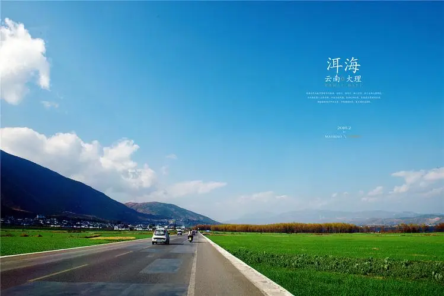

环保与生活
大理市，地处大理州中部，位于东经99°58~100°27，北纬25°25~25°58之间。东与宾川、祥云相连，南与巍山、弥渡相邻，西接漾濞，以点苍山为界，北与洱源、鹤庆交界，总面积1815平方千米，其中山地面积1278.8平方千米，占总面积的70.5%；坝区面积286.2平方千米，占总面积的15.8%；洱海水域面积250平方千米，占总面积的13.7%
大理地处云贵高原与横断山脉结合部位，地势西北高，东南低。地貌复杂多样，点苍山以西为高山峡谷区。点苍山以东、祥云以西为中山陡坡地形。境内的山脉主要属云岭山脉及怒山山脉，点苍山位于大理境中部，如拱似屏，巍峨挺拔。北部剑川与丽江地区兰坪交界处的雪斑山是大理内群山的最高峰，海拔4295米。最低点是云龙县怒江边的红旗坝，海拔730米。州内湖盆众多，面积在1.5平方公里以上的盆地有18个，面积共1871.49平方公里。占全州总面积的6.6%。盆地多为线形盆地，呈带状分布，从西向东排列为6个带。第四纪山岳冰川遗址分布于洱海以西，永平以北的高山区。
主要河流属金沙江、澜沧江、怒江、红河（元江）四大水系，有大小河流160多条，呈羽状遍布全州。州境内分布有洱海、天池、茈碧湖、西湖、东湖、剑湖、海西海、青海湖8个湖泊。洱海位于大理市境东部，是云南省第二大内陆淡水湖泊，风光明媚，素有“高原明珠”之称，为国家级重点风景名胜区。
大理市属北亚热带高原季风气候类型，年均气温14. 9℃，年日照时数2227. 5小时，年降雨量为1051.1毫米，年均元霜期228天，同时还以风高著称，故有“风城”之称。